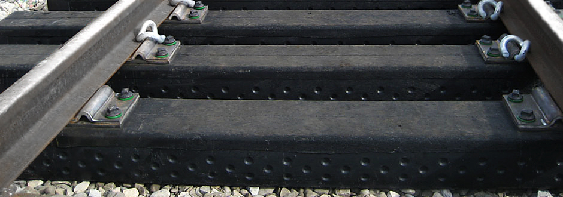
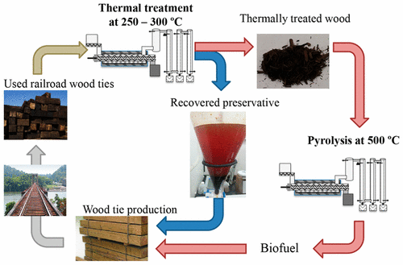

Net Positive Rail

Net Positive Rail is a movement to transition infrastructure and equipment toward greater use of clean energy,
infinity trains, and processes that capture and store carbon.
Advantages of Rubber and Composite Railroad Ties
Rubber and
composite
railroad ties
capture carbon,
last longer, and
end carcinogenic
creosote burning
during power
generation.
Summertime finds most of us drinking more liquids, often from plastic bottles, and driving more as we attend family events or festivals, go on vacations, picnics or leisurely drives, or watch the action at auto races. The waste ultimately resulting from these actions - bald tires and empty bottles - may soon be routinely incorporated into another mode of transportation - as railroad ties.
The typical wooden tie is treated with hazardous chemicals, often creosote, to resist rotting and insect invasion. This can leach into soil and contaminate the area. Most wooden ties last only 7 to 15 years before they need to be replaced, at which point they are burnt, releasing cancer causing chemicals into the air. The railroad industry estimates they spend over 1 billion each year installing and replacing approximately 14 million railroad ties of the 700 million ties in use around the U.S. That's an entire football field stacked 70 stories high every year filled with railroad ties that are too toxic to reuse in gardens or parks.
In contrast, plastic and rubber railroad ties do not rot or become infected with insects. They are denser than wood, plus they are water proof and virtually maintenance free. They also
last three to five times longer than wooden ties with a life expectancy of over 50 years, after which they can be reprocessed and reused. Rubber and plastic ties deaden train noise and reduce vibrations. While rubber and plastic tires currently cost more than wooden ties, their durability and many other positive attributes make them cost effective over their lifespan.
For railroad tie application, about 70 percent of the tire is used, including the steel. Tire sidewalls are not used for railroad ties; however these are ground into crumb rubber and sold for other uses, ensuring that the entire tire is recycled. Rubber ties weigh about 400 pounds each, which is heavier than the average 275 pound wooden tie, but the same equipment used to replace wooden ties can also be used for rubber. The heavier weight of the rubber tie also helps secure the track to the ground more securely.
Plastic ties made from bottles weigh quite a bit more, up to 800 pounds each, but each of these ties uses about 1,200 recycled plastic bottles. Plastic lumber can be manufactured to have a wood-grain finish and are UV resistant with the color impregnated throughout the tie. About 10 percent of railroad tracks use concrete ties, which weigh closer to 900 pounds each.
Rubber railroad ties made from recycled tires have been tested on a 500 mile section of track in upstate New York with excellent success. Despite the extreme weather conditions to which they are exposed and the many tons of moving weight regularly placed on them, the tires have not degraded at all.
Some places in the world have already switched to non-wooden railroad ties. Japan uses ties made from virgin foamed polyurethane with glass reinforcement and San Francisco Bay Area Rapid Transit has also switched to non-wooden ties. The European market is also expected to switch to rubber or plastic ties in the near future.
One additional benefit of using recycled materials to make durable railroad ties is that tires, plastic bottles and railroad tracks are found throughout the country. Since these ties are heavy to transport, it may make more sense to site facilities throughout the nation near tire or plastic recycling facilities, thus providing jobs for American workers in numerous locations. Making a superior product using recycled feedstock at numerous regional facilities - what a win-win situation.
Integrico Composites - Railroad Ties and Construction Matting
US-based solution for hard-to-recycle plastics since 2007. Producing product for five out of the eight Class 1 railroads as of 2015.
Hansen: Turning Tires into Railroad Ties
80% of tires end up in landfills. The Hansen rubber railroad tie utilizes 68,000 recycled tires per mile (21 tires per railroad tie). All-rubber railroad ties are 100% recyclable into new rubber railroad ties or other crumb rubber products.
Our Future Rubber could come from Indoor Dandelion Farms -
Turning Dandelions into Tires
Hydroponic systems allow rubber to be harvested from dandelion roots four times annually.
Class Project
-
Biotech - Controlled Environment Agriculture (CEA)
Creosote Removal
Rural NE Georgia Wood-Fired Plants leave nearby Residents with Bad Taste
The plants in Franklin and Madison counties burn a combination of discarded industrial wood and creosote-coated railroad ties. Burning railroad ties in authorized steam boilers was approved in 2016 when the U.S. Environmental Protection Agency
revised its rules.
Capital Corner
Two-Step Thermochemical Process for Adding Value to Used Railroad Wood Ties and Reducing Environmental Impacts
Thermal treatment at 300 °C (572 °F) can be used to recover creosote preservatives from ties, followed by pyrolysis decomposition at 500 °C (932 °F) to produce a high quality bio-oil and biochar.

Original railroad tie article by Mary Overlee Olson, Recycling Coordinator for Steele County Environmental Services.
Nuclear Power